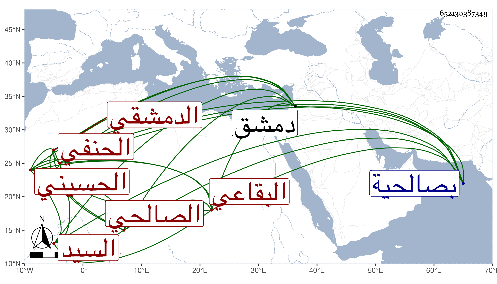

0902Sakhawi.DawLamic.ITO20230111-ara1.EIS1600.652130387349
Biography ID: 652130387349
إبراهيم بن علي بن إبراهيم بن محمد بن سعيد بن عبيد الله السيد برهان الدين بن العلاء الحسيني البقاعي الأصل الدمشقي الصالحي الحنفي ولد بعد الخمسين تقريبا بصالحية دمشق ونشأ بها فقرأ القرآن عند عمر اللولوي الحنبلي ومنظومة النسفي وأصوله وأخذ في الفقه عن قاسم الرومي والشرف بن عبيد والكمال ابن شهاب النيسابوري وعنه أخذ في أصول الدين والنحو والمنطق والمعاني أيضا وأخذ في أصول الفقه عن ابن الحمراء ثم لازم عبد النبي المغربي في الأصلين والحكمة وأدب البحث والمنطق وغيرها وجود القرآن على الشمس بن الخدر وعبد الله ابن العجمي الوفاء وسمع الحديث على البرهان بن مفلح القاضي وعثمان البلبلي والشمس الخيري الشافعي وعليه قرأ البخاري والبرهان الناجي ولازمه والقطب الخيضري واستقر ببلده في إمامة الريحانية المجاورة لنور الدين الشهيد مولى الطواشي ريحان واقفها وغيرها من وظائفها بعد أبيه المتوفى في ذي الحجة سنة اثنتين وتسعين وتكسب بالشهادة وتزوج ابنة العلاء المرداوي وحج بها في سنة ثلاث وتسعين وجاور التي تليها ولازمني حينئذ حتى قرأ شرحي على التقريب للنووي وكتبه بخطه بل وسمع في شرحي للألفية وكذا شرح المصنف وجملة من البخاري وغير ذلك وقرأ على عبد المعطي رسالة القشيري وسمع عليه بقراءة غيره في العوارف للسهروردي وهو إنسان خير فاضل فقير يستحضر كثيرا من البخاري ونحوه وكتب بخطه أشياء كان الله له .
